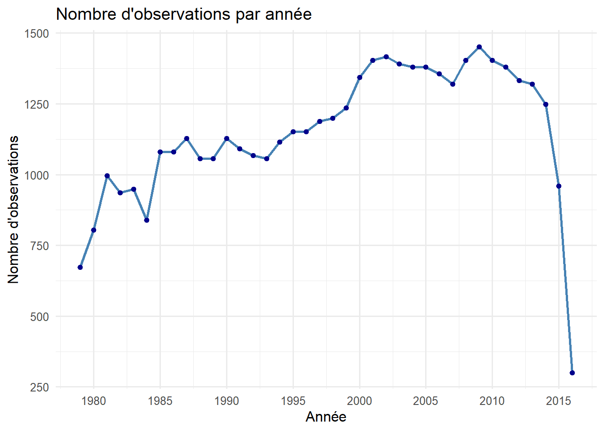
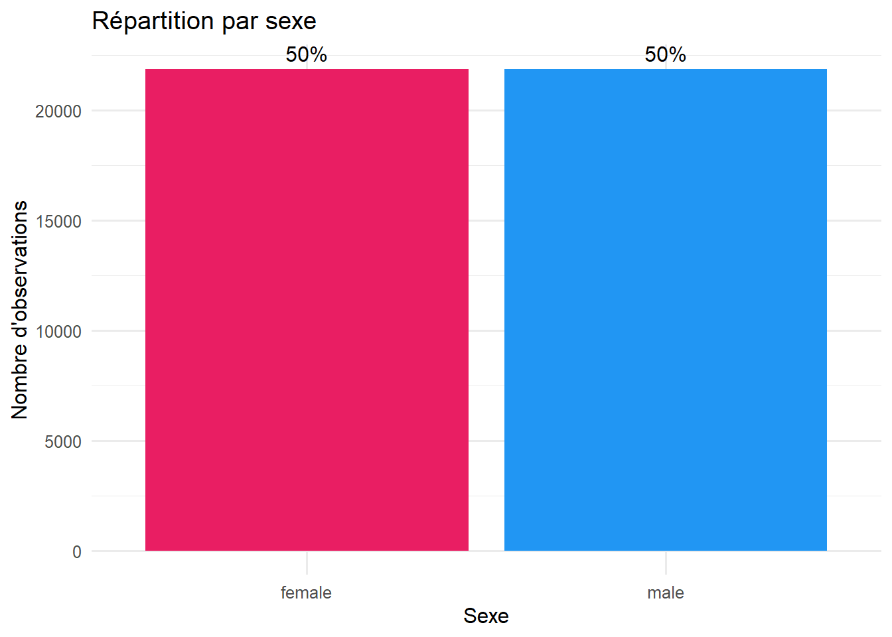
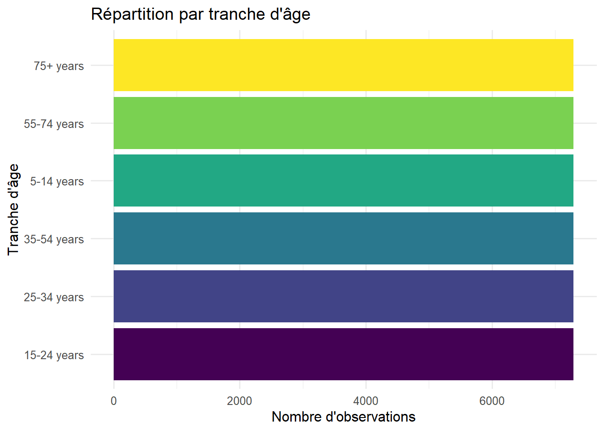
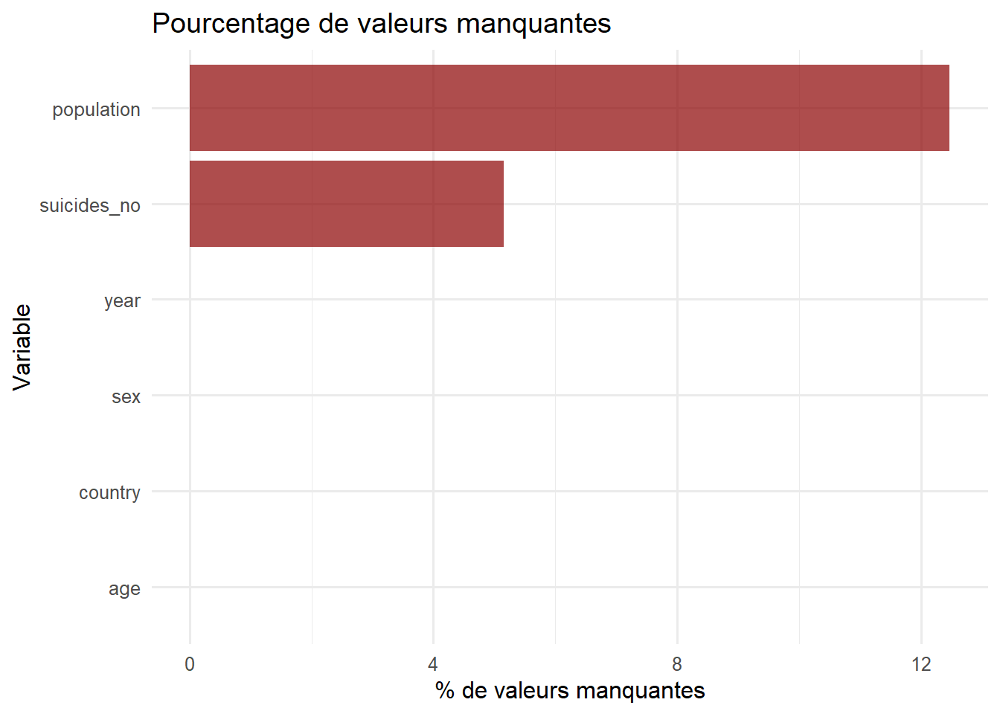

Rows: 43,776
Columns: 6
$ country <chr> "Albania", "Albania", "Albania", "Albania", "Albania", "Al…
$ year <dbl> 1985, 1985, 1985, 1985, 1985, 1985, 1985, 1985, 1985, 1985…
$ sex <chr> "female", "female", "female", "female", "female", "female"…
$ age <chr> "15-24 years", "25-34 years", "35-54 years", "5-14 years",…
$ suicides_no <dbl> NA, NA, NA, NA, NA, NA, NA, NA, NA, NA, NA, NA, NA, NA, NA…
$ population <dbl> 277900, 246800, 267500, 298300, 138700, 34200, 301400, 264…Chapitre 1 : Exploration des Données
1 Exploration Initiale des Données
1.1 Importation des Données
1.2 Aperçu du Dataset
1.3 Statistiques Descriptives Complètes
| Name | data |
| Number of rows | 43776 |
| Number of columns | 6 |
| _______________________ | |
| Column type frequency: | |
| character | 3 |
| numeric | 3 |
| ________________________ | |
| Group variables | None |
Variable type: character
| skim_variable | n_missing | complete_rate | min | max | empty | n_unique | whitespace |
|---|---|---|---|---|---|---|---|
| country | 0 | 1 | 4 | 34 | 0 | 141 | 0 |
| sex | 0 | 1 | 4 | 6 | 0 | 2 | 0 |
| age | 0 | 1 | 9 | 11 | 0 | 6 | 0 |
Variable type: numeric
| skim_variable | n_missing | complete_rate | mean | sd | p0 | p25 | p50 | p75 | p100 | hist |
|---|---|---|---|---|---|---|---|---|---|---|
| year | 0 | 1.00 | 1998.50 | 10.34 | 1979 | 1990.00 | 1999 | 2007 | 2016 | ▆▆▇▇▇ |
| suicides_no | 2256 | 0.95 | 193.32 | 800.59 | 0 | 1.00 | 14 | 91 | 22338 | ▇▁▁▁▁ |
| population | 5460 | 0.88 | 1664091.14 | 3647231.23 | 259 | 85112.75 | 380655 | 1305698 | 43805214 | ▇▁▁▁▁ |
1.4 Structure des Variables
1.4.1 1. Variable country (Pays)
Nombre total de pays : 141 | Pays | Observations |
|---|---|
| Austria | 456 |
| Hungary | 456 |
| Iceland | 456 |
| Israel | 456 |
| Mauritius | 456 |
| Netherlands | 456 |
| Romania | 456 |
| Sweden | 456 |
| United Kingdom | 456 |
| United States of America | 456 |
1.4.2 2. Variable year (Année)
Période : 1979 - 2016 
1.4.3 3. Variable sex (Sexe)

1.4.4 4. Variable age (Tranches d’âge)

1.4.5 5. Variable suicides_no (Nombre de suicides)
| Statistique | Valeur |
|---|---|
| Minimum | 0.00 |
| Q1 | 1.00 |
| Médiane | 14.00 |
| Moyenne | 193.32 |
| Q3 | 91.00 |
| Maximum | 22338.00 |
| Écart-type | 800.59 |
1.4.6 6. Variable population
| Statistique | Valeur |
|---|---|
| Minimum | 259 |
| Q1 | 85 113 |
| Médiane | 380 655 |
| Moyenne | 1 664 091 |
| Q3 | 1 305 698 |
| Maximum | 43 805 214 |
| Écart-type | 3 647 231 |
1.5 Valeurs Manquantes
| Variable | NA_count | Pourcentage |
|---|---|---|
| country | 0 | 0.00 |
| year | 0 | 0.00 |
| sex | 0 | 0.00 |
| age | 0 | 0.00 |
| suicides_no | 2256 | 5.15 |
| population | 5460 | 12.47 |

1.6 Conclusions de l’Exploration
Points clés identifiés :
- Volume : 43 776 observations sur 35 ans
-
Valeurs manquantes :
suicides_no(5.15%) etpopulation(12.47%) - Distribution : Données disponibles pour 141 pays
- Sexe : Répartition équilibrée entre hommes et femmes
- Période : Couverture continue de 1980 à 2015
Prochaines étapes : Nettoyage et transformation des données